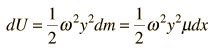
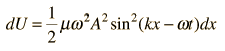

Energy in a String Wave
The energy associated with a traveling wave in a stretched string is conveniently expressed as the energy per wavelength.
The energy of a small segment of the string can be expressed as the sum of the kinetic energy and elastic potential energy of the segment. The differential form of the elastic potential energy is

Using the description of a traveling wave
the potential energy expression becomes

The energy for a full wavelength can be found by integrating this expression at a given time, and it is most convenient to set t=0 for this integration. The energy for one wavelength along the string is
The differential kinetic energy is
Using the velocity expression
the kinetic energy takes the form
and again setting t=0 for simplification
The total energy associated with a wavelength is
Since this amount of energy is transported a distance of one wavelength along the string in one period, this expression can be used to calculate the power transmitted along a string.
|